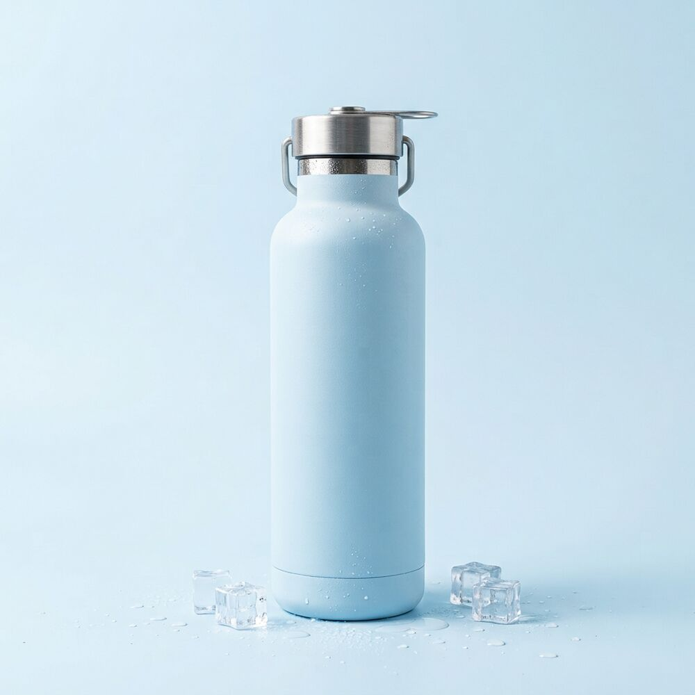
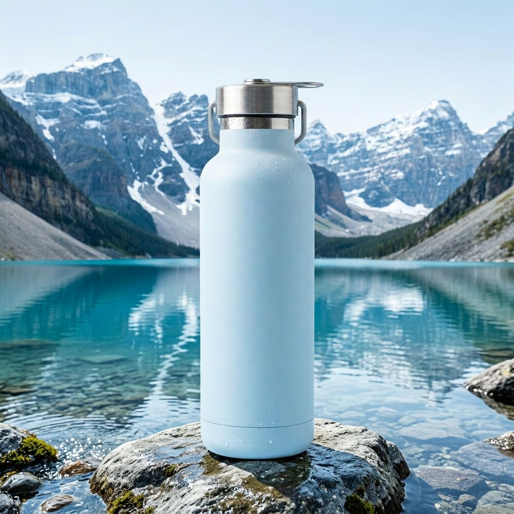

★★★★★
“Hielo por la mañana, hielo por la noche. Y eso que la dejé al sol en la playa.”
Acero inoxidable con doble pared al vacío. Tu agua sale como la metiste: helada en agosto, caliente en enero.

❄ 4 °C tras 24 h ☕ 68 °C tras 12 hGlaciar es una botella de acero inoxidable 18/8 con doble pared al vacío y tapón hermético con asa. No suda, no gotea y no guarda sabores: puedes pasar del café al agua sin notar nada.
Horas que la bebida se mantiene por debajo de 10 °C (fría) o por encima de 60 °C (caliente) a 25 °C de temperatura ambiente.

Acero 18/8 y pintura en polvo que no se raya. Llévala a la montaña, al gimnasio o déjala caer: seguirá como el primer día.
Caben cubitos enteros y se limpia con la mano. Nada de cepillos raros ni olores atrapados.
Rosca de acero con junta de silicona. Métela en la mochila tumbada: no cae ni una gota.
156
Es lo que evita, de media, una sola persona que cambia a Glaciar. Multiplícalo por toda tu familia.
“Hielo por la mañana, hielo por la noche. Y eso que la dejé al sol en la playa.”
“Me llevo el café a la obra a las 6 y a mediodía sigue quemando. Brutal.”
“El color es precioso en persona y no suda nada en la mochila del cole.”
Recomendamos lavarla a mano para que la pintura dure años. El tapón sí puede ir al lavavajillas.
Sí, el tapón hermético aguanta bebidas con gas sin problema.
No. El acero 18/8 no transmite sabores ni olores.
500 ml para el bolso, 750 ml para el día a día y 1 litro para deporte o excursiones.